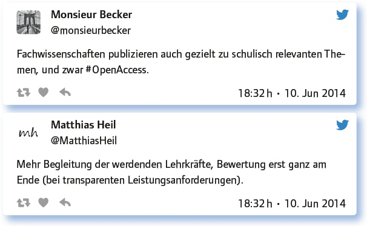

von Torsten Larbig
Kaum jemand in Deutschland, der nicht meint, mitreden zu können, wenn es um die Lehrer geht. Jede und jeder weiß, wie sie gefälligst zu sein haben, was sie leisten sollen … Entsprechend viele Beiträge gibt es dann auch, wenn es um deren Ausbildung geht.
Und deshalb gibt es in diesem Fall einige Anregungen zum Nachdenken im Vorfeld, bevor dann die Teilgeberinnen und Teilgeber dieser Ausgabe des #EDchatDE zu Wort kommen:
Wenn du Lehrer oder Lehrerin bist, auch Hochschullehrer oder Hochschullehrerin etc., dann befrage dich zunächst nach deiner eigenen Erinnerung an die Ausbildung. Denn in gut konstruktivistischer Methodik werden wir auch im #EDchatDE auf diese Erfahrungen zurückgreifen und die Diskussion an sie anknüpfen. Dazu gleich mehr bei Frage 1.
Wie das Thema in der Wissenschaft diskutiert wird, erfährst du am besten aus wissenschaftlichen Artikeln. Hier das Ergebnis einer Google-Scholar-Abfrage zur „Zukunft der Lehrerbildung“: https://scholar.google.de/scholar?q=zukunft+der+lehrerausbildung&hl=de&as_sdt=0&as_vis=1&oi=scholart&sa=X&ei=HKWVU5XwE8nR7Aako4CoAg&ved=0CCkQgQMwAA
Exemplarisch verlinken wir hier ein Positionspapier zum Thema aus dem Zentrum für Schulforschung und Fragen der Lehrerbildung an der Martin-Luther-Universität HalleWittenberg (ZSL): „Die Zukunft der Lehrerbildung – ein Positionspapier“ (PDF): www2.ibw.uni-heidelberg.de/-gerstner/zflposition.pdf
Hier müssten jetzt noch diverse Zeitungsartikel zum Thema folgen wie, z. B. dieser: www.fr-online.de/campus/lehrer-bildung-wie-lehrer-in-zukunft-lernen-sollen-,4491992,16412214.html oder dieser: www.faz.net/aktuell/politik/inland/bildung-die-lehrer-der-zukunft-1922622.html, aber sicherlich kennt jeder im Beruf die unterschiedlichen Positionen irgendwie … Oder?
Nun zurück zur Selbstbesinnung und damit endlich in die Diskussion der Lehrerschaft zum Thema:
Erinnere dich an deine eigene Ausbildung: Top oder Flop?
Na? Irgendwo wiederentdeckt? Aber wichtiger als der Gesamteindruck:
Was war wirklich hilfreich für die Schulpraxis im Rahmen deiner Ausbildung? Konkret werden!
Mentor(innen), die einen wirklich in allen Bereichen unterstützen/ausprobieren lassen.
Verwenden kann ich alles – wusste es damals aber noch nicht in Ermangelung einer professionell geprägten Perspektive.
Das gemeinsame Experimentieren mit Kollegen in der Ausbildung und deren Feedback. Ehrlich und ohne Notendruck: Viel gelernt.
Ausgewählte Dozenten, die sich als Lehramtsausbilder verstanden. Nicht als reine Fachvermittler.
Offene Auseinandersetzung mit offenem Unterricht inklusive Hospitation an Modellschulen (Bielefeld, Laagberg).
Gute Vorbilder (= meine Mentorinnen IM Unterricht), konkrete Rückmeldung an meinen Unterricht.
Es gibt also Kriterien für das, was in der Ausbildung hilfreich sein kann. In der Diskussion wurde außerdem noch oft auf die Wertschätzung als gar nicht hoch genug anzurechnender Faktor verwiesen, wenn es um für die Ausbildung hilfreiche Erfahrungen geht. Wertschätzung ist in der Pädagogik aber allgemein ein zentraler Begriff, dessen Umsetzung nicht allenthalben zu gelingen scheint, auch nicht in der Lehrerausbildung. Hm … Und wie halte ich es selbst damit? Eine kurze Frage zum Innehalten – und weiter geht es:
Wo müssen dringend Reformen in der heutigen Lehrerausbildung ansetzen?
Es ist eine bessere Verbindung von Theorie (Uni) und Praxis (Schule) notwendig.
Die zweite Phase muss länger sein, weitere Praxisanteile sind notwendig, Modularisierung sollte vorsichtig reduziert werden.
Leute, die selbst keinen guten Unterricht machen, sollten aus der Lehrerausbildung entfernt werden: Vorbildfunktion wichtig.
Dringend: Das WISSENSCHAFTLICHE FACHSTUDIUM für Gymnasien wiederherstellen und für andere Lehrämter verstärken!
Wissenschaft ist eine wichtige Voraussetzung, der Fokus sollte in der 2. Phase m. E. aber eher auf deren Kommunikation liegen.
Die Ausbildung an der Uni sollte nicht von den Fachwissenschaftlern abfallen, sondern eigenständig sein.
Mehr Leute mit Schulerfahrung in die Lehramtsausbildung einbinden! Das ist nicht mehr selbstverständlich, leider!
Angehende Lehrer müssen viel früher wissen, ob sie wirklich geeignet sind. Selbsttest in BW.
Selbsttests sind sinnvoll, wenn sie nicht schon fertige Lehrkräfte voraussetzen. Raum zum Lernen muss sein!
Die Einsicht fördern, dass fachdidaktische Theorie wichtig für nicht nur zufällig gelingende unterrichtliche Praxis ist.
Antworte auf 3 Tweets unterschiedlicher Teilgeberinnen a) zustimmend, b) kritisch, c) provozierend!
Die Diskussion in dieser #EDchatDE-Ausgabe war sehr dialogisch und bezog sich konkret auf Tweets, sodass an dieser Stelle auf das Gesamtprotokoll dieser Ausgabe unter der laufenden Nummer 20 verwiesen wird:
https://wiki.andrespang.de/index.php?title=EDchatDE_Archiv_2014
Lehrerausbildung im 21. Jahrhundert: Der Think-Tank #EDchatDE macht Konzeptvorschläge!

Und zum Schluss das oft angeführte „Problem“ des Bildungsföderalismus in Deutschland, hier aber einmal auf seine Chancen hin betrachtet:
Bildungsföderalismus und Lehrer-Ausbildung: Wie können wir voneinander lernen?
Mehr kooperieren – die Regionalisierung der Bildung ist schön bunt aber extremst verschwenderisch!
Bundesweit voneinander lernen: im bundesweiten oder gar internationalen Zusammenhang.
Vielleicht mit neuen Formaten wie einem Lehrer-Ausbildungs-MOOC oder einem interkantonalen Barcamp.
Und sonst? Hier eine kleine Auswahl:
Welche Anregungen, Fragen hast du sonst noch zum Thema?
Referendare unterstützen, nicht klein machen!
Wer schlägt den #EDchatDE als ultimative Ausbildungsplattform in der Uni vor? Mehr Input in einer Stunde als in 5 Jahren Ausbildung …
Thema Weiterbildung: Ich habe ein hilfreiches Portal entdeckt, zu Kursen, MOOCs, Ressourcen, Blogs, Gruppen: http://t.co/yMJKUiBA1j
Mentoren in den Schulen müssen motiviert und fachlich/didaktisch versiert sein. Auswahlverfahren und Belohnung!
Didaktik als diskursiver Theorie-Praxis-Raum, #didaktischesdesign, #didaktik via @SlideShare: http://t.co/QDtkEvsXyC
Weiterführender Link:
https://edchatde.wordpress.com/2014/06/13/think-tank-edchatde-die-lehrerausbildung-vor-dem-aus/
Link zum vollständigen Protokoll: